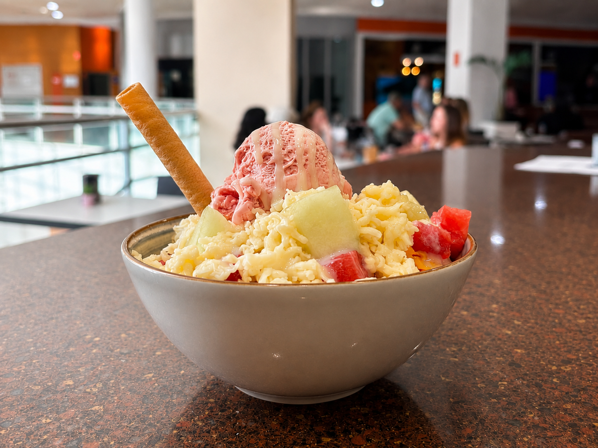

Mangos preparados
Mango Callejero, Fresa Loca, Verde Power, Fuego Mango y Diablo Verde.
Cafetería en Centro Comercial El Teler - Ontinyent
Bienvenidos a Café & Co.Secha, un lugar donde cada detalle está pensado para que disfrutes sabores auténticos y experiencias que te hacen volver.

Lo que nos hace especiales
Mango Callejero, Fresa Loca, Verde Power, Fuego Mango y Diablo Verde.

Crujientes, dulces y preparadas con ese sabor que recuerda a casa.

Co.Secha Tropical, Co.Secha Fresh y Co.Secha Energy.
Nuestra historia
En Café & Co.Secha creamos un espacio acogedor en Ontinyent, donde el café, la fruta y los sabores colombianos se encuentran en una carta fresca, cercana y preparada con cariño.
Carrer del Pintor Segrelles 1
Centro Comercial El Teler, Piso 3
46870 · Ontinyent
Lunes a domingo
08:30 — 13:00
17:00 — 24:00